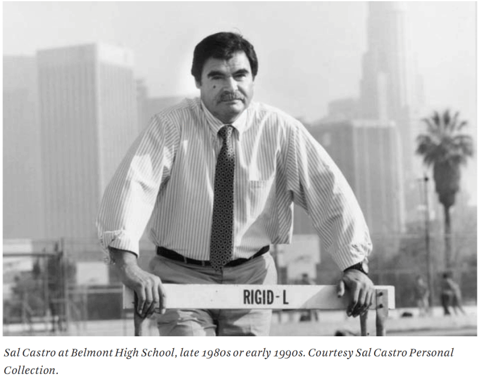

Many scholar articles that focus on the Chicano Blowouts overlook the contributions of BHS students and the events than transpired there. Even though most of walkout efforts were centralized and started in East Los Angeles, Belmont was the only school within the downtown area to walk out despite initial setbacks (Garcia & Castro, 2011, pg. 69).I know provide a few examples of how the events that transpired in Belmont HS provide new perspectives to the study of the Chicano Blowouts of 1968. If one explores how the walkouts to place at Belmont High School, we learn that the events at Belmont High School provide us with interesting insight of student allyship, police brutality, and women’s involvement in the Chicano Blowout.
Unfortunately, as students began to walkout, they were met police violence that had been both approved by the Belmont High School and the LAUSD Board of Education. The principal, Ernest Nauman, a retired navy captain, quickly ordered all teachers to lock their doors to limit students from walking out. By the time students went onto the hallways demanding “Strike, walk out, we want better food, we want Chicano teachers”, police overreaction took place (Garcia & Castro 2011, pg 173). Police officers, equipped with batons and helmets, suppressed the walkout efforts, and it signaled early on that school administrators were not supportive of walkouts efforts even if it meant police brutality to contain the students. By the end of the walkout at Belmont High School, on March 8th, a few members had been arrested, interestingly most were not students, some were women, and one arrestee was identified as white.
The events of March 8th at Belmont High School showcased how the police had not seen and therefore was not properly trained to “monitor” mass protests of Mexican students (Munoz 2011). The momentum of having schools outside of East Los Angeles helped built the momentum, and further access to news coverage. The importance of the police repression in BHS is important because it solidified that established Mexican American leadership was weary of its involvement with these efforts. The violence that transpired at Belmont are essential in the study of repression against social movements, especially in Los Angeles, as Los Angeles is regarded as the prison capital of the world (Hernandez, 2017). It is important to assess the strategies the State, the Los Angeles Police Department, and other law enforcement agencies began to heavier presence in the Belmont High School area through the newly established Rampart Division in 1966. As the Blowouts increased its momentum, during the 1970’s it would see a big decline of student protest in due part to state-sanctioned violence and terror.
Through the oral history of Joe Razo, we know that these two women in the photograph are Margie Sanchez and Ruth Robinson. Joe Razo states:
"[The police] was saying, 'We’ve got two hardcore women here. They aren’t giving us shit. They aren’t giving us any information, and they’re not carrying any identification.' That was Ruth Robinson and Margie Sanchez. So they were smarter than we were, in terms of maybe Ruth had already gone through it or maybe she had received indoctrination through the United Farm Workers because they was always getting arrested. So she knew what procedures to follow, and she must have passed it on to Margie. So they would give them very little information, other than name, serial number, type of thing, when you’re a prisoner of war type of thing" (Razo, 2013).
This quote counteracts long standing notions that women did not have their own strategies in the movement. In fact, through Razo’s narrative, we learned that women were instrumental in challenging the LAPD and protecting the efforts by any means. Perhaps the confusion on the LAPL archives might be rooted in the fact that Ruth utilized the Free Press to print out some of the first newspapers; or perhaps it was because that is how Ruth protected the La Raza newspaper (Razo, 2013).
The work of Dolores Delgado Bernal (1998) and Maylei Blackwell (2016) have honored the contributions of women during the 1960s as often times academic research and history has noted the 1980s as the first wave of Chicanx/Latina feminist thought. However, research has provided examples in which women did in fact risk their livelihood for the efforts of the movement and also provided philosophies of leadership. The picture above highlights one of the many ways in which history has not been accountable to the work of women. For a long time, the archives at the Los Angeles Public Library provided the caption that one individual was a brown beret and the white women from the New Press, a liberal newspaper of the time. However, there names were not offered. Through the oral history of Joe Razo and David Sanchez, we are not only able to give a name to the individuals but further note their importance.
Through my initial research it has been difficult to find the biographies of both women, mainly for Margie Sanchez. However, it is important to highlight some findings about Margie Sanchez and Ruth Robinson. We know that Margie was part of the Brown Berets who eventually left to join a different group that was more radical “August 29th Movement” with her parents Pat Sanchez, Josefina Sanchez, and her partner, Cruz Ameda. While there is limited information on Margie, there is more information on her father, Patricio Sanchez. Patricio Sanchez, was a member of UMAS, which is the Mexican American Political Association, that was founded throughout the South and Midwest with the support of returning veterans (Munoz,1989). Furthermore, in the La Raza Newpaper dating March 31st, 1968, Pat Sanchez is described as: “41, has lived in East LA, for 16 years, graduate of the University of New Mexico in Electronic Engineering, 10 years as Research Engineer in local aerospace industry, spearheaded organizing and was chairman of MAPA 40th chapter, organized and chaired Hollenbeck Democratic Club and Save Hazard Park Committe, helped organized United Council of Community Organizations.” In some sense, Margie Sanchez came from a middle-class, politically-active family.
Ruth Robinson, was a graduate from Stanford University, previously active in the United Farmers Workers efforts, who was recruited to help the organizing efforts in the Los Angeles area (Razo, 2013). Father Luce recruited her and Eli Rianzo, both which were instrumental to the Chicano Movement. However, generally, they are known for their editorial responsibilities for the La Raza Newspaper. While Eli Rianzo and Joe Razo have been heralded as the founders of the newspaper, Joe Razo corrects that statement by saying Ruth was in fact the heart of the organization who worked tirelessly, ran the operations of the newspaper, and even trained the organization’s staff. Yet, despite such facts, David Sanchez’s oral history project, founder of the Brown Beret, only references Ruth Robinson as the girlfriend of Eli.
While both women demonstrated capacities of strong leadership both eventually left the movement. By highlighting the biographies of Margie Sanchez and Ruth Robinson, I hope to situate Belmont High School as a critical sight that can help us understand the contributions of more women leaders in the Chicano Movement. If one looks at Belmont High School, one can concretely know that women were more than side partners but were strategist against police surveillance and other the ground efforts.
The Chicano Blowouts of 1968, while powered by thousands of youth of Mexican descent, records show that schools such as Jefferson, which was predominantly Black students, and Venice, who had more white students, participated in the walkouts (McCurdy, 1968a; McCurdy, 1968b). To highlight, contributions by white women participation in the Chicano Blowouts who were also victims of police violence, the narrative of Frances Spector, a student from Belmont High Scohool, holds power. She states as she was order by the police to go home, she was picked up by police, and while they said they were going to take her home, she was taken to the police station (Toguerson, 1968). On March 17th, 1968, as major outlets continue to document the unprecedented walkouts, demonstrations, and mass protest, journalist Torgueson interviewed Frances Spector, who is described as having “light brown hair and blue eyes” (1968). She pledges support for the cause when stating:
“You look at the industrial arts classes, and it’s all Chicano and black. You look at the college preparatory classes, and it’s all anglos and Asians. That can’t be the way they really fit! They can’t be getting the right counseling. They’re just putting people where they think they belong because of what color they are".
In this Los Angeles times article, Torgueson (1968) states 10 out of the 15 people who were arrested during the Belmont High School walkout spent time in jail, and from those 10, 9 were outsiders and one was a students. This leads a question to who was that one 1 student? The Chicano Student News (1968) provides a lead that in fact it could have been a women since “[the police] hauled one girl to jail despite the impassioned protest of her mother who was with her on school grounds”. Furthermore, there are other examples that show how white student allies also were instrumental in the planning of the walkouts at Belmont High School.
One of the unique contributions of Belmont High students in terms of organizing was the involvement of white students, in particular white women. First and foremost, Sal Castro recalls seeing some white students participating, some leading the marches, and even stating two got arrested (pg. 169). Additionally, Joe Razo, another instrumental leader in the Chicano Blowout, has talked about the non-Mexican student involved at Belmont High Schoool. In Joe Razo’s five-part interview, he recalls:
"Raul [Ruiz] had been working with a little gal, a guerita—she was not Latina—over at Belmont. Her parents were on the radical side…She was the one that it had been arranged that when we appeared, she would start, along with other people, shouting “Walkout!” and pull the fire alarm.” (Razo, 2013, Part 3)
As my research evolves, I hope to honor the individual by providing a name. Interestingly, there are promising leads. In the “special” LAUSD Board Meeting, that address student unrest, the only Belmont High School Representative and “Blowout” Representative”, Michelena Wilson (Secretariat, 1968b). Considering it is not a Spanish-surname, it supports Joe Razo’s and Sal Castro’s discussion about white student leadership. An examination of yearbooks from Belmont from the 1967-1969 yearbooks, provides one instance of a student by the name of M. Wilson.

Sidronio Jacobo
Email: sidjacobo@g.ucla.edu
Twitter: sidroniio
LinkedIn: /sidroniojacobo